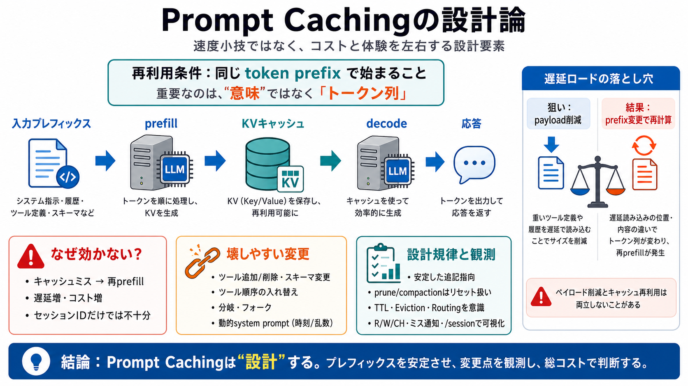

Add configurable cache retention (for Anthropic and OpenAI) · Issue #967 · earendil-works/pi · GitHub
You signed in with another tab or window. You switched accounts on another tab or window. * Notifications You must be s…

コーディングエージェント（LLMに指示・履歴・ツール定義・結果を毎ターン送る構成）では、Prompt Cachingは速度小技ではなく、 コストと体験を左右する設計上の重要要素になり得ます。
日本語メモ：Prompt Caching（プロンプトキャッシュ）＝prefill（事前計算）で作る内部状態（KVキャッシュ）を再利用し、再計算を減らす仕組み。
似た会話でも、内部では“同じ前半トークン列”として扱われないとキャッシュ再利用できず、prefillが丸ごと再計算されます。
LLMの計算は、前半入力をまとめて処理するprefillと、後半を1トークンずつ生成するdecodeに分かれます。
Prompt Cachingが再利用するのは「完全一致の会話」ではなく、「前半トークン列（プレフィックス）」に対応する計算です。
下のような変更はsystem prompt等へ畳み込まれ、序盤トークン列を別物にして早期にキャッシュを壊しやすくなります。
ツールを遅延ロードする設計は通信量を減らせますが、ツール情報がsystem promptへ畳み込まれると、 その後ろが別プレフィックスになって再prefillが増えることがあります。
TTL（保持期限）が短いと、待機時間だけで失効し、次のリクエストで過去履歴のprefillを再計算する必要が出ます。
Piはprune（途中削除）をむやみに避けます。削除でプレフィックス境界が変わると、削除以降が再prefill対象になり損になり得るからです。
キャッシュ再利用は「セッションID」だけでなく、モデル/プロバイダ切替、履歴圧縮（compaction）、動的system prompt（タイムスタンプ/乱数）などで崩れます。
Piはキャッシュ統計や通知（R/W/CH、キャッシュミス通知、/sessionコマンド等）を通じて、性能問題を可視化しようとします。
強みは「設計とトレードオフ」を具体メカニズム（キャッシュ再計算）へ接続し、運用判断へ使える観測性を前面に出した点です。
You signed in with another tab or window. You switched accounts on another tab or window. * Notifications You must be s…
# Anthropic vs OpenAI Prompt Caching 2026: Cost Math + 3 Cache-Miss Fixes. Anthropic Claude cache reads: 0.1× input (90%…
Everyone pings their prompt cache every 30 seconds. That is 8x too much, and at the ten-minute pause I measured, only on…
Everyone's intuition about context engineering is sensible: if you're chatting with ChatGPT or Claude and the conversati…
Prompt Cachingを最大化するには、ツール定義の変更頻度を抑え、順序/スキーマを安定させ、TTL短さを前提に監視と検証を回す必要があります。
Prompt Cachingは「効けば安い」だけでなく、キャッシュミスが設計・運用判断に跳ね返るため、 前半トークンプレフィックスの安定性と可視化をセットで扱うのが要点です。